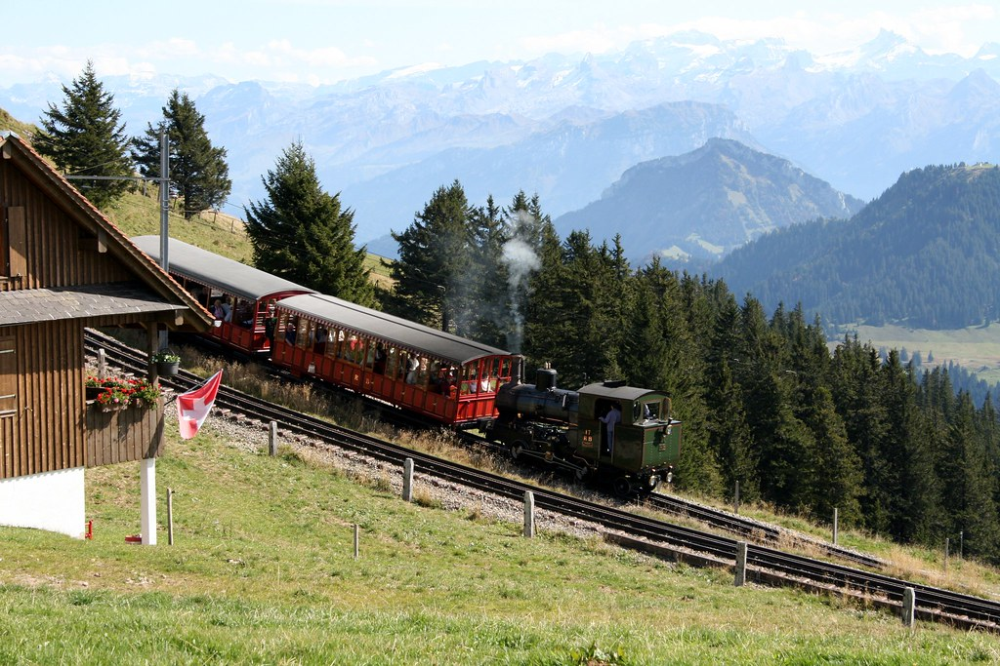

Qué está pasando realmente
Un pasajero espera en un andén suizo y, según el horario impreso, su tren debería salir a las 08:14. No a las 08:15, no "más o menos a las ocho y cuarto": exactamente a las 08:14. Y, con una probabilidad estadística abrumadoramente alta, así ocurrirá, con un margen de error medido en segundos más que en minutos. Para cualquier viajero acostumbrado a sistemas ferroviarios donde un retraso de veinte minutos apenas merece disculpas, la precisión suiza puede parecer casi ficticia. No lo es: es, sencillamente, el resultado de décadas de inversión, planificación meticulosa y una cultura nacional que convirtió la puntualidad en un valor casi identitario.
El sistema ferroviario suizo, gestionado principalmente por los Ferrocarriles Federales Suizos (conocidos por sus siglas SBB, CFF o FFS según el idioma) junto a una red de operadores regionales privados perfectamente coordinados entre sí, alcanza de forma consistente índices de puntualidad superiores al 90%, considerando puntual cualquier tren que llegue a su destino con menos de tres minutos de retraso respecto al horario oficial. Esta cifra, publicada anualmente de forma completamente transparente al público, contrasta enormemente con la de la mayoría de los sistemas ferroviarios del mundo, donde retrasos de cinco, diez o quince minutos ni siquiera se contabilizan como incidencia relevante.
Detrás de esta precisión hay una ingeniería de horarios extraordinariamente sofisticada, conocida técnicamente como Taktfahrplan u "horario cadenciado": un sistema donde los trenes salen exactamente a la misma hora, cada hora, de forma repetitiva y predecible durante todo el día, coordinados milimétricamente entre sí en los nodos de intercambio para que un pasajero que baja de un tren tenga tiempo justo, ni de sobra ni escaso, para hacer transbordo al siguiente. Este diseño, desarrollado y perfeccionado a lo largo de décadas, permite que toda la red funcione como un mecanismo de relojería, literalmente, donde cada minuto de retraso en un punto puede generar efectos en cascada que los ingenieros ferroviarios suizos trabajan constantemente para minimizar o eliminar.
En Suiza, un tren se considera "puntual" solo si llega con menos de tres minutos de retraso respecto a su horario oficial.
De dónde viene todo esto
Esta obsesión por la precisión no es un fenómeno aislado del transporte, sino que conecta con una identidad cultural suiza mucho más amplia, profundamente asociada históricamente a la relojería de precisión —Suiza sigue siendo, hasta hoy, sinónimo mundial de relojes de altísima calidad— y a una cultura general de fiabilidad, orden y respeto estricto por los compromisos y horarios acordados. En Suiza, llegar tarde a una reunión de trabajo, a una cita médica o incluso a una comida informal con amigos se considera una falta de respeto notable hacia el tiempo ajeno, un valor cultural que se refuerza mutuamente con la fiabilidad del transporte público que hace posible, en primer lugar, cumplir con esa expectativa social.
El financiamiento sostenido y a largo plazo también juega un papel decisivo en este sistema: Suiza invierte, per cápita, una de las cifras más altas del mundo en mantenimiento y modernización de su infraestructura ferroviaria, entendiendo el transporte público no como un gasto opcional, sino como una inversión estratégica nacional a proteger de recortes políticos coyunturales. Esta inversión constante permite mantener las vías, los sistemas de señalización y el material rodante en condiciones óptimas, reduciendo drásticamente las averías técnicas que en otros países generan retrasos frecuentes e impredecibles.
Más allá de lo básico
El resultado práctico de todo este sistema es una relación de la población suiza con el transporte público radicalmente distinta a la de muchos otros países: los suizos confían tanto en la puntualidad de sus trenes que planifican transbordos ajustadísimos, de apenas dos o tres minutos entre un tren y otro, sabiendo que, con altísima probabilidad, ambos llegarán exactamente cuando deben. Esa confianza colectiva en el sistema es, en sí misma, parte de lo que hace que el sistema funcione: una infraestructura de precisión sostenida, en última instancia, por la disciplina cultural de todo un país que decidió que el tiempo ajeno merece ese nivel de respeto.
La ingeniería detrás de esta precisión se aprecia mejor en la estación central de Zúrich, Zúrich HB, uno de los nudos ferroviarios más concurridos de Europa, donde decenas de trenes llegan y salen dentro de los mismos minutos cada hora, calculados para que los pasajeros puedan cruzar el andén y tomar un tren de conexión con apenas dos o tres minutos de margen. Ese nivel de sincronización exige planificar los trenes no como rutas individuales, sino como un único sistema nacional interconectado, recalculado al segundo cada vez que una sola línea cambia su horario.
El contraste con la vecina Alemania suele citarse como la prueba más clara de cuánto importan aquí la cultura y la inversión: Deutsche Bahn, la red ferroviaria nacional alemana, lleva años lidiando con retrasos crónicos y una infraestructura rezagada pese a operar en un país con una riqueza y capacidad de ingeniería comparables. Tanto comentaristas suizos como alemanes suelen señalar esta comparación como prueba de que la puntualidad es una decisión sostenida con financiamiento constante y expectativa cultural, no un subproducto automático de ser un país rico y ordenado.

Qué debes saber si viajas
Algunos consejos para moverte en tren por Suiza como un local:
- Llega al andén al menos 2-3 minutos antes: los trenes suizos salen exactamente a su hora, no "más o menos" al minuto previsto.
- Confía en los tiempos de conexión cortos entre trenes: el sistema está diseñado para que funcionen.
- Compra un Swiss Travel Pass si te mueves entre ciudades con frecuencia: cubre la mayoría de trenes, autobuses y barcos.
- Si un tren llega con unos minutos de retraso, consulta si puedes reclamar una compensación: los ferrocarriles suizos se toman los retrasos en serio hasta el punto de ofrecer reembolsos.
- Los trenes regionales y locales a veces tienen un estándar de puntualidad ligeramente distinto al de las líneas interurbanas: no asumas que todos los retrasos son igual de raros.
El panorama completo
Lo fascinante de este caso es que demuestra que la puntualidad extrema no es un rasgo nacional "natural" o inevitable, sino el resultado deliberado de decisiones políticas, económicas y de ingeniería sostenidas durante generaciones. Suiza no nació siendo puntual: se construyó, tren por tren, minuto por minuto, década tras década, hasta convertir algo tan abstracto como "el respeto por el tiempo ajeno" en una infraestructura física, medible y, sobre todo, replicable cada día, exactamente a la misma hora.
¿Tienes curiosidad por saber cómo culturas cercanas manejan reglas parecidas? No te pierdas nuestros artículos sobre El país donde deberle veinte céntimos a un amigo es cosa seria y Las casas sin cortinas que presumen su vida privada al mundo.